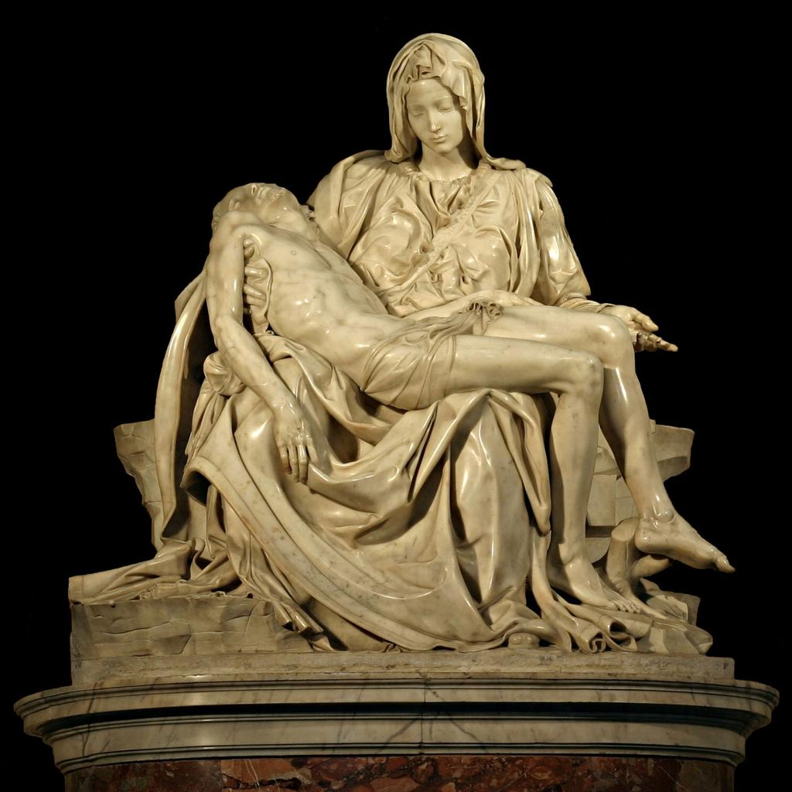
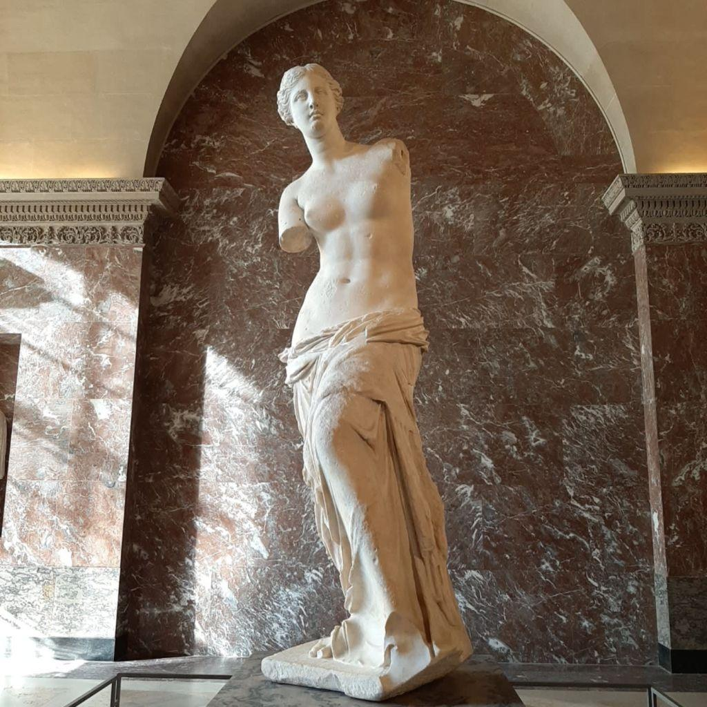
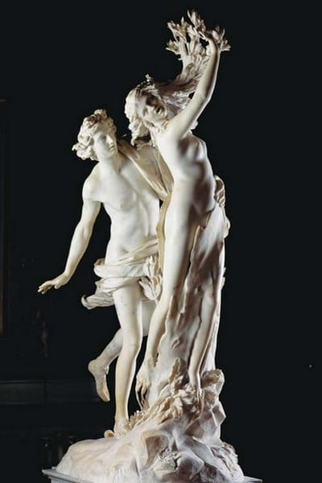
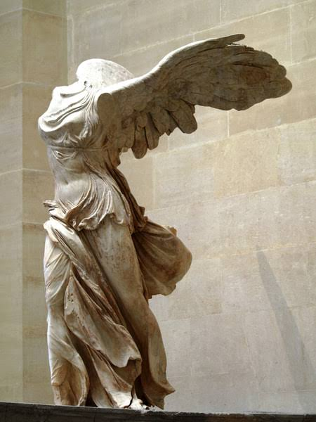
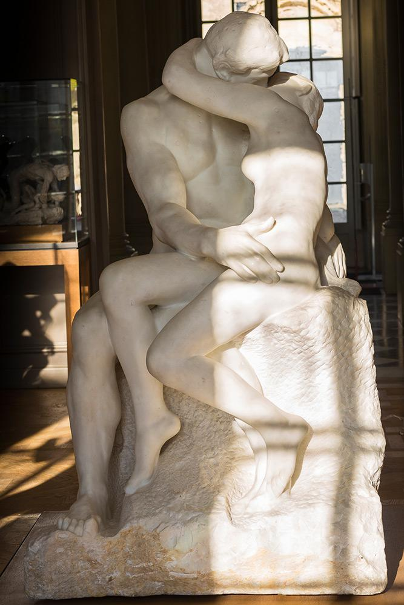
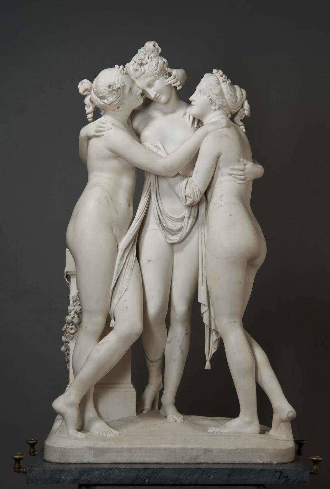

La Piedad
Autor: Miguel Ángel
Nombre de la obra: La piedad
Tipo: Mármol de Carrara
Fecha: 1498–1499


Conoce las obras y artistas que forman parte de nuestra colección.
Autor: Miguel Ángel
Nombre de la obra: La piedad
Tipo: Mármol de Carrara
Fecha: 1498–1499

Autor: Edvard Munch
Nombre de la obra: Desconocido (atribuida a Alejandro de Antioquía)
Tipo: Mármol
Fecha: Aproximadamente 130–100 a. C

Autor: Gian Lorenzo Bernini
Nombre de la obra: Gladiators in Combat
Tipo: Mármol
Fecha: 1622–1625

Autor: Desconocido
Nombre de la obra: Victoria de Samotracia
Tipo: Mármol
Fecha: 190 a. C

Autor: Auguste Rodin
Nombre de la obra: El Beso
Tipo: Mármol
Fecha: 1882–1898

Autor: Antonio Canova
Nombre de la obra: Las Tres Gracias
Tipo: Mármol
Fecha: 1814-1817
